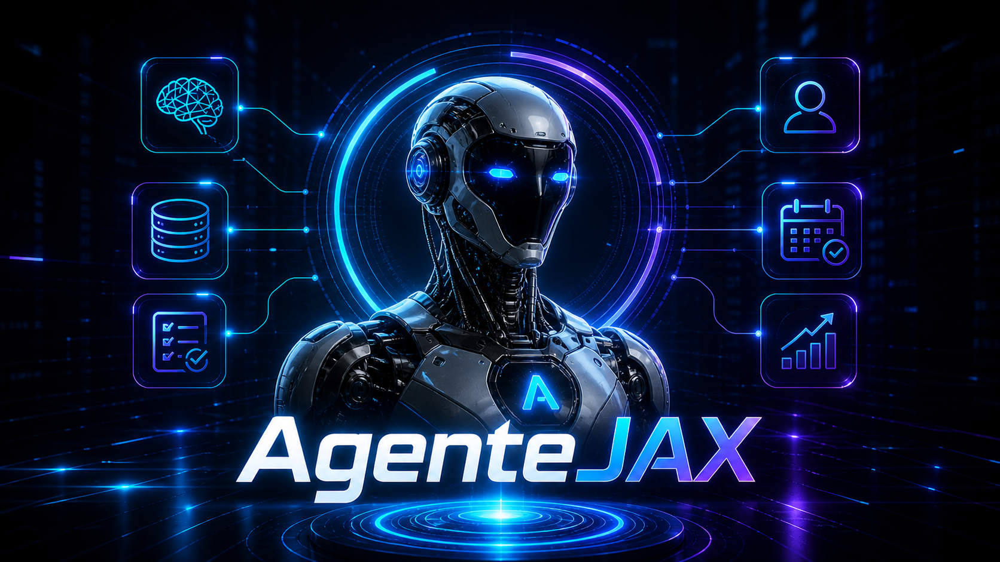

Um assistente que mora no seu Telegram, lembra de você, age sozinho 24/7 e usa as ferramentas que você escolher. Em TypeScript. Sem framework fechado. Você é dono de cada linha.
Existem ótimos frameworks de agente prontos. Mas todos têm um teto. Aqui é a comparação honesta entre os dois mais conhecidos e a abordagem deste curso.
| Aspecto | Hermes | OpenClaw | Agentejax (este curso) |
|---|---|---|---|
| Linguagem | Python | TypeScript | TypeScript |
| Modelo de uso | Você instala e usa | Você instala e usa | Você aprende e constrói |
| Curva inicial | Baixa (clone, configura) | Baixa (clone, configura) | Média (segue 3 trilhas) |
| Quem entende o código | O time deles | O time deles | Você |
| Customização profunda | Fork e mantém | Fork e mantém | Direto no seu repo |
| Memória multi-camada | Sim (4 camadas) | Sim | Sim (3 camadas, T1 M1.2) |
| Skills auto-geradas | Sim (nativo) | Sim (registry público) | Opcional (T2 M2.3) |
| Voz | Sim | Sim (mobile nativo) | Opcional (T2 M2.2) |
| Canais de mensagem | 15+ | 22+ | Telegram (extensível) |
| Multi-agente | Limitado | Sim | Out-of-scope (você adiciona) |
| Cliente mobile nativo | Não | Sim | Telegram já é mobile |
| Aprovações de ações | Trust levels | Por comando | Por comando (T3 M3.1) |
| Lock-in | Roadmap deles | Roadmap deles | Zero |
| License | MIT | MIT | MIT |
| Quando faz mais sentido | Quero rodar hoje, sem mexer | Quero ecossistema com loja de skills | Quero entender e ser dono |
Cada trilha tem 3 módulos com 6 tópicos. Pode seguir do início ou pular pra parte que te interessa — cada módulo se sustenta sozinho.
Do zero até o agente respondendo: ambiente, identidade, memória, ferramentas e o loop principal.
Comunicação 24/7 no Telegram, streaming, voz, autonomia, reflexão e skills que ele cria sozinho.
MCP, aprovações, defesa contra prompt injection, custos, dashboard, hospedagem 24/7 e testes.
Marque as features que quer no seu agente e baixe um arquivo .md com seu plano de build personalizado. Os 6 itens marcados como núcleo são obrigatórios — o resto é decisão sua.
O prompt é pra você colar numa IA (Claude, ChatGPT) e pedir pra ela construir só o que você marcou.
O que é, por que aprender, e os conceitos-chave. Você pega o essencial sem precisar ler tudo.
Cada módulo abre num modal pra leitura rápida ou em página dedicada com casos práticos e código.
Lê de noite no escuro, lê de dia no claro. Tudo otimizado pra leitura longa.